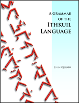

Ce site présente la grammaire exhaustive d'une langue construite humaine, l'ithkuil. La version originel de cette langue fut précédement mis en ligne sur l'Internet en Janvier 2004. Une variante de ce langage appelé ilaksh, conçu pour une prononciation plus aisée fut posté en Juin 2007. Ces deux versions ont été remplacées par une nouvelle, définitive (et finale) version de ce langage en Juillet 2011.
Pour ceux qui sont familier avec l'histoire de la construction de langues artificiels, l'ithkuil représente l'intersection entre une langue philosophique a priori et une langue logique. Ainsi, elle n'a pas été faite pour fonctionner comme une langue humaine “naturelle”. L'ithkuil existe comme un exercice d'exploration de comment les langues humaines peuvent function, fonctionner, et non comment les langues humaines doivent fonctionner.
Si j'aime l'idée d'inventer des langues de fictions qui miment les langues naturelles, ajouter simplement une autre langue parmi les milliers qui existent ou ont existées déjà ne me suffit pas. Pour moi, le plus grand but est de tenter de toucher à la diversité créative qu'offre la nature de l'humain, sans regarder leurs attributs; ce qui ne pourrait pas être créer naturellement, mais uniquement avec un effort conscient — une langue idéal qui se veut du plus haut degrée possible de logique, effiscience, détails, et précisions en expression cognitive à travers les langues humaines parlées, et en même temps minimiser l'ambiguïté, le vague, l'illogisme, la redondance, la polysémie, et tout ce qui peut être arbitraire, qui peut paraître faire double emploi dans les langues humaines naturelles. Cette nouvelle version de l'ithkuil représente le point culminant de plus de trente ans d'effort personnel dans le but de créer une langue de cette sorte.
Remerciements: Je veux remercier tous ceux qui ont pris part à l'ithkuil, en incluant Stanislav Kozlovskiy, qui, grâce à son article "La Vitesse de la Pensée" porta l'ithkuil à l'attention de beaucoup dans le monde russophone. Спасибо, Стас! Merci également à Lexa Samons pour son dur labeur de traduction du site originel en Russe, ainsi qu'à mon confrère linguiste et conlanger David J. Peterson pour l'attribution à l'ithkuil du Smiley Award 2008.
Notes de traduction: Même si cette traduction non-officielle de la grammaire de l'ithkuil proposée sur le site ithkuil.net dans sa version de juillet 2016 a été initiée, maintenue et grandement traduite par melop, il est bon de mentionner également l'aide de ML, Baloung et RF; qui, chacun par leurs différentes participations, ont pu aider à ce que le projet arrive à bout. Cette traduction a été faite dans l'objectif de préserver au mieux le sens et les idées du texte, ainsi que la prose de l'auteur. Les traducteurs ne sont en aucun cas responsable du matériau original. Comme le rappel à chaque page le bandeau de copyright, tout attribution est à John Quijada.
Quelques conventions ont quand même été utilisées: les abbréviations latines 'i.e.' et 'e.g.' bien que peu courantes en français, ont été gardées à cause de leurs lourdes présences dans ces textes.
Le genre masculin a été arbitrairement choisi pour le nom 'ithkuil', étant celui par défaut en français, et les traducteurs ne voulant pas s'embêter avec ce genre d'histoire.
Chaque fois où le texte original faisait directement écho à certaines de l'anglais, ces références ont été tenté d'être appliqué au français, et remplaçant des particularismes anglais par français, tout en essayant de préserver le sens de l'exemple original bien qu'une traduction directe ne soit pas toujours possible. Les exemples ont également été modifié pour s'adapter au français, e.g. pour ce qui est de la prononciation ou la conjugaison de certains verbes.
Pour toutes questions, commentaires, ou relevé de coquilles et autres fautes qu'elles soient typographiques ou pas en accord avec l'esprit du document original, veuillez vous adressez à melopee7/at/gmail/dot/com.
| —John Quijada |
|  |
For those who would like a copy of the Ithkuil Grammar And while you’re at it, you can check out the novel I co- (It’s a political thriller/science fiction story that explores the |
©2004-2011 by John Quijada. You may copy or excerpt any portion of the contents of this website for private, individual, or personal use which is non-commercial in nature and not for purposes of profit. Otherwise, you may copy or excerpt brief portions of the contents of this website in published, web-accessible, or commercially distributed articles, papers or webpages for purposes of review, commentary or analysis, provided you give full attribution to the author and this website.